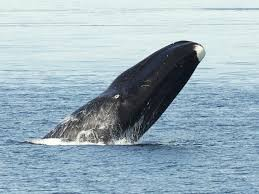
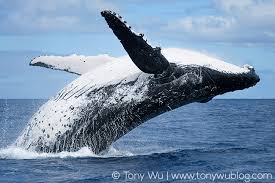
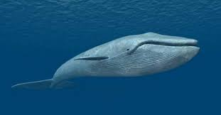
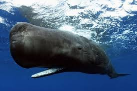
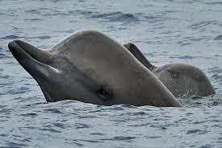
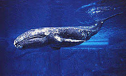
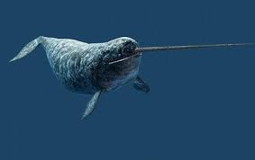

- Home
- Activity
- Member
- information
Member
クジラ（鯨、Whale）は哺乳類のクジラ目、あるいは鯨偶蹄目の鯨凹歯類に属する水生動物の総称であり、その形態からハクジラとヒゲクジラに大別される。
3年生
-

ホッキョククジラさん
偶蹄目（鯨偶蹄目とする説もあり）セミクジラ科ホッキョククジラ属に属する鯨類。
-

ザトウクジラさん
クジラ目ヒゲクジラ亜目ナガスクジラ科に属するヒゲクジラの一種。 個体数の減少から1966年に商業捕鯨が禁止されている。
-

シロナガスクジラさん
現存する最大の動物種であるだけでなく、恐竜やその他、これまでに地球上に存在したことが確認されている限りの動物を含めても、あらゆる既知の動物の中で最大の種であり、記録では体長34メートルのものまで確認されている。
-

マッコウクジラさん
ハクジラ類の中で最も大きく、歯のある動物では世界最大で、巨大な頭部形状が特徴。
-

キタトックリクジラさん
同じアカボウクジラ科のオウギハクジラ属、タイヘイヨウアカボウモドキ属に似ており、これら3属でトックリクジラ亜科 (Hyperoodontinae) を構成する。
2年生
-

コククジラさん
コククジラ科は、コククジラ1属1種のみで構成される。体長 12-14 m と、ヒゲクジラのなかでは比較的小型
-

イッカクさん
偶蹄目（鯨偶蹄目とする説もあり）イッカク科イッカク属に分類される鯨類。本種のみでイッカク属を構成する。